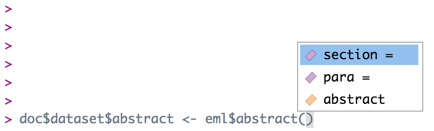

Chapter 4 Editing EML
This chapter is a practical tutorial for using R to read, edit, write, and validate EML documents. Much of the information here can also be found in the vignettes for the R packages used in this section (e.g. the EML package).
Most of the functions you will see in this chapter will use the arcticdatautils and EML packages.
This chapter will be longest of all the sections! This is a reminder to take frequent breaks when completing this section.
4.1 Edit an EML element
There are multiple ways to edit an EML element.
4.1.1 Edit EML with strings
The most basic way to edit an EML element would be to navigate to the element and replace it with something else. Easy!
For example, to change the title one could use the following command:
doc$dataset$title <- "New Title"If the element you are editing allows for multiple values, you can pass it a list of character strings. Since a dataset can have multiple titles, we can do this:
doc$dataset$title <- list("New Title", "Second New Title")However, this isn’t always the best method to edit the EML, particularly if the element has sub-elements.
4.1.2 Edit EML with the “EML” package
To edit a section where you are not 100% sure of the sub-elements, using the eml$elementName() helper functions from the EML package will pre-populate the options for you if you utilize the RStudio autocomplete functionality. The arguments in these functions show the available slots for any given EML element. For example, typing doc$dataset$abstract <- eml$abstract()<TAB> will show you that the abstract element can take either the section or para sub-elements.

doc$dataset$abstract <- eml$abstract(para = "A concise but thorough description of the who, what, where, when, why, and how of a dataset.")This inserts the abstract with a para element in our dataset, which we know from the EML schema is valid.
Note that the above is equivalent to the following generic construction:
doc$dataset$abstract <- list(para = "A concise but thorough description of the who, what, where, when, why, and how of a dataset.")The eml() family of functions provides the sub-elements as arguments, which is extremely helpful, but functionally all it is doing is creating a named list, which you can also do using the list function.
4.1.3 Edit EML with objects
A final way to edit an EML element would be to build a new object to replace the old object. To begin, you might create an object using an eml helper function. Let’s take keywords as an example. Sometimes keyword lists in a metadata record will come from different thesauruses, which you can then add in series (similar to the way we added multiple titles) to the element keywordSet.
We start by creating our first set of keywords and saving it to an object.
kw_list_1 <- eml$keywordSet(keywordThesaurus = "LTER controlled vocabulary",
keyword = list("bacteria", "carnivorous plants", "genetics", "thresholds"))Which returns:
$keyword
$keyword[[1]]
[1] "bacteria"
$keyword[[2]]
[1] "carnivorous plants"
$keyword[[3]]
[1] "genetics"
$keyword[[4]]
[1] "thresholds"
$keywordThesaurus
[1] "LTER controlled vocabulary"We create the second keyword list similarly:
kw_list_2 <- eml$keywordSet(keywordThesaurus = "LTER core area",
keyword = list("populations", "inorganic nutrients", "disturbance"))Finally, we can insert our two keyword lists into our EML document just like we did with the title example above, but rather than passing character strings into list(), we will pass our two keyword set objects.
doc$dataset$keywordSet <- list(kw_list_1, kw_list_2)
Note that you must use the function list here and not the c() function. The reasons for this are complex, and due to some technical subtlety in R - but the gist of the issue is that the c() function can behave in unexpected ways with nested lists, and frequently will collapse the nesting into a single level, resulting in invalid EML.
4.2 FAIR data practices
The result of these function calls won’t show up on the webpage but they will add a publisher element to the dataset element and a system to all of the entities based on what the PID is. This will help make our metadata more FAIR (Findable, Accessible, Interoperable, Reusable).
Add the following lines to all of your data processing scripts.
doc <- eml_add_publisher(doc)
doc <- eml_add_entity_system(doc)4.3 Edit attributeLists
Attributes are stored in an attributeList. When editing attributes in R, you need to create one to three objects:
- A data.frame of attributes
- A data.frame of custom units (if applicable)
Attributes can exist in EML for dataTable, otherEntity, and spatialVector data objects. Please note that submitting attribute information through the website will store them in an otherEntity object by default. We prefer to store them in a dataTable object for tabular data or a spatialVector object for spatial data.
To edit or examine an existing attribute table already in an EML file, you can use the following commands, where i represents the index of the series element you are interested in. Note that if there is only one item in the series (ie there is only one dataTable), you should just call doc$dataset$dataTable, as in this case doc$dataset$dataTable[[1]] will return the first sub-element of the dataTable (the entityName)
# If they are stored in an otherEntity (submitted from the website by default)
attributeList <- EML::get_attributes(doc$dataset$otherEntity[[i]]$attributeList)
# Or if they are stored in a dataTable (usually created by a datateam member)
attributeList <- EML::get_attributes(doc$dataset$dataTable[[i]]$attributeList)
# Or if they are stored in a spatialVector (usually created by a datateam member)
attributeList <- EML::get_attributes(doc$dataset$spatialVector[[i]]$attributeList)
attributes <- attributeList$attributes
print(attributes)4.3.1 Edit attributes
Attribute information should be stored in a data.frame with the following columns:
- attributeName: The name of the attribute as listed in the csv. Required. e.g.: “c_temp”
- attributeLabel: A descriptive label that can be used to display the name of an attribute. It is not constrained by system limitations on length or special characters. Optional. e.g.: “Temperature (Celsius)”
- attributeDefinition: Longer description of the attribute, including the required context for interpreting the
attributeName. Required. e.g.: “The near shore water temperature in the upper inter-tidal zone, measured in degrees Celsius.” - measurementScale: One of: nominal, ordinal, dateTime, ratio, interval. Required.
- nominal: unordered categories or text. e.g.: (Male, Female) or (Yukon River, Kuskokwim River)
- ordinal: ordered categories. e.g.: Low, Medium, High
- dateTime: date or time values from the Gregorian calendar. e.g.: 01-01-2001
- ratio: measurement scale with a meaningful zero point in nature. Ratios are proportional to the measured variable. e.g.: 0 Kelvin represents a complete absence of heat. 200 Kelvin is half as hot as 400 Kelvin. 1.2 meters per second is twice as fast as 0.6 meters per second.
- interval: values from a scale with equidistant points, where the zero point is arbitrary. This is usually reserved for degrees Celsius or Fahrenheit, or latitude and longitude coordinates, or any other human-constructed scale. e.g.: there is still heat at 0° Celsius; 12° Celsius is NOT half as hot as 24° Celsius.
- domain: One of:
textDomain,enumeratedDomain,numericDomain,dateTime. Required.- textDomain: text that is free-form, or matches a pattern
- enumeratedDomain: text that belongs to a defined list of codes and definitions. e.g.: CASC = Cascade Lake, HEAR = Heart Lake
- dateTimeDomain:
dateTimeattributes - numericDomain: attributes that are numbers (either
ratioorinterval)
- formatString: Required for
dateTime, NA otherwise. Format string for dates, e.g. “DD/MM/YYYY”. - definition: Required for
textDomain, NA otherwise. Definition for attributes that are a character string, matches attribute definition in most cases. - unit: Required for
numericDomain, NA otherwise. Unit string. If the unit is not a standard unit, a warning will appear when you create the attribute list, saying that it has been forced into a custom unit. Use caution here to make sure the unit really needs to be a custom unit. A list of standard units can be found using:standardUnits <- EML::get_unitList()then runningView(standardUnits$units). - numberType: Required for
numericDomain, NA otherwise. Options arereal,natural,whole, andinteger.- real: positive and negative fractions and integers (…-1,-0.25,0,0.25,1…)
- natural: non-zero positive integers (1,2,3…)
- whole: positive integers and zero (0,1,2,3…)
- integer: positive and negative integers and zero (…-2,-1,0,1,2…)
- missingValueCode: Code for missing values (e.g.: ‘-999’, ‘NA’, ‘NaN’). NA otherwise. Note that an NA missing value code should be a string, ‘NA’, and numbers should also be strings, ‘-999.’
- missingValueCodeExplanation: Explanation for missing values, NA if no missing value code exists.
You can create attributes manually by typing them out in R following a workflow similar to the one below:
attributes <- data.frame(
attributeName = c('Date', 'Location', 'Region','Sample_No', 'Sample_vol', 'Salinity', 'Temperature', 'sampling_comments'),
attributeDefinition = c('Date sample was taken on', 'Location code representing location where sample was taken','Region where sample was taken', 'Sample number', 'Sample volume', 'Salinity of sample in PSU', 'Temperature of sample', 'comments about sampling process'),
measurementScale = c('dateTime', 'nominal','nominal', 'nominal', 'ratio', 'ratio', 'interval', 'nominal'),
domain = c('dateTimeDomain', 'enumeratedDomain','enumeratedDomain', 'textDomain', 'numericDomain', 'numericDomain', 'numericDomain', 'textDomain'),
formatString = c('MM-DD-YYYY', NA,NA,NA,NA,NA,NA,NA),
definition = c(NA,NA,NA,'Sample number', NA, NA, NA, 'comments about sampling process'),
unit = c(NA, NA, NA, NA,'milliliter', 'dimensionless', 'celsius', NA),
numberType = c(NA, NA, NA,NA, 'real', 'real', 'real', NA),
missingValueCode = c(NA, NA, NA,NA, NA, NA, NA, 'NA'),
missingValueCodeExplanation = c(NA, NA, NA,NA, NA, NA, NA, 'no sampling comments'))However, typing this out in R can be a major pain. Luckily, there’s a Shiny app that you can use to build attribute information. You can use the app to build attributes from a data file loaded into R (recommended as the app will auto-fill some fields for you) to edit an existing attribute table, or to create attributes from scratch. Use the following commands to create or modify attributes (these commands will launch a Shiny app in your web browser):
#first download the CSV in your data package from Exercise #2
data <- read.csv(text=rawToChar(getObject(adc_test, pkg$data)))# From data (recommended)
EML::shiny_attributes(data = data)
# From an existing attribute table
attributeList <- get_attributes(doc$dataset$dataTable[[i]]$attributeList)
EML::shiny_attributes(data = NULL, attributes = attributeList$attributes)
# From scratch
atts <- EML::shiny_attributes()Once you are done editing a table in the app, quit the app and the tables will be assigned to the atts variable as a list of data frames (one for attributes, factors, and units). Alternatively, each table can be to exported to a csv file by clicking the Download button.
If you downloaded the table, read the table back into your R session and assign it to a variable in your script (e.g. attributes <- data.frame(...)), or just use the variable that shiny_attributes returned.
For simple attribute corrections, datamgmt::edit_attribute() allows you to edit the slots of a single attribute within an attribute list. To use this function, pass an attribute through datamgmt::edit_attribute() and fill out the parameters you wish to edit/update. An example is provided below where we are changing attributeName, domain, and measurementScale in the first attribute of a dataset. After completing the edits, insert the new version of the attribute back into the EML document.
new_attribute <- datamgmt::edit_attribute(doc$dataset$dataTable[[1]]$attributeList$attribute[[1]], attributeName = 'date_and_time', domain = 'dateTimeDomain', measurementScale = 'dateTime')
doc$dataset$dataTable[[1]]$attributeList$attribute[[1]] <- new_attribute4.3.2 Edit custom units
EML has a set list of units that can be added to an EML file. These can be seen by using the following code:
standardUnits <- EML::get_unitList()
View(standardUnits$units)Search the units list for your unit before attempting to create a custom unit. You can search part of the unit you can look up part of the unit ie meters in the table to see if there are any matches.
If you have units that are not in the standard EML unit list, you will need to build a custom unit list. A unit typically consists of the following fields:
- id: The
unit id(ids are camelCased) - unitType: The
unitType(runView(standardUnits$unitTypes)to see standardunitTypes) - parentSI: The
parentSIunit (e.g. for kilometerparentSI= “meter”) - multiplierToSI: Multiplier to the
parentSIunit (e.g. for kilometermultiplierToSI= 1000) - name: Unit abbreviation (e.g. for kilometer
name= “km”) - description: Text defining the unit (e.g. for kilometer
description= “1000 meters”)
To manually generate the custom units list, create a dataframe with the fields mentioned above. An example is provided below that can be used as a template:
custom_units <- data.frame(
id = c('siemensPerMeter', 'decibar'),
unitType = c('resistivity', 'pressure'),
parentSI = c('ohmMeter', 'pascal'),
multiplierToSI = c('1','10000'),
abbreviation = c('S/m','decibar'),
description = c('siemens per meter', 'decibar'))Using EML::get_unit_id for custom units will also generate valid EML unit ids.
Custom units are then added to additionalMetadata using the following command:
unitlist <- set_unitList(custom_units, as_metadata = TRUE)
doc$additionalMetadata <- list(metadata = list(unitList = unitlist))4.3.3 Edit factors
For attributes that are enumeratedDomains, a table is needed with three columns: attributeName, code, and definition.
- attributeName should be the same as the
attributeNamewithin the attribute table and repeated for all codes belonging to a common attribute. - code should contain all unique values of the given
attributeNamethat exist within the actual data. - definition should contain a plain text definition that describes each code.
To build factors by hand, you use the named character vectors and then convert them to a data.frame as shown in the example below. In this example, there are two enumerated domains in the attribute list - “Location” and “Region”.
Location <- c(CASC = 'Cascade Lake', CHIK = 'Chikumunik Lake', HEAR = 'Heart Lake', NISH = 'Nishlik Lake' )
Region <- c(W_MTN = 'West region, locations West of Eagle Mountain', E_MTN = 'East region, locations East of Eagle Mountain')The definitions are then written into a data.frame using the names of the named character vectors and their definitions.
factors <- rbind(data.frame(attributeName = 'Location', code = names(Location), definition = unname(Location)),
data.frame(attributeName = 'Region', code = names(Region), definition = unname(Region)))4.3.4 Finalize attributeList
Once you have built your attributes, factors, and custom units, you can add them to EML objects. Attributes and factors are combined to form an attributeList using the following command:
attributeList <- EML::set_attributes(attributes = attributes,
factors = factors) This attributeList must then be added to a dataTable.
4.4 Set physical
To set the physical aspects of a data object, use the following commands to build a physical object from a data PID that exists in your package. Remember to set the member node to test.arcticdata.io!
physical <- arcticdatautils::pid_to_eml_physical(mn, pkg$data[[i]])Alternatively, you can set the physical of a data object not yet in your package by simply inputting the data PID:
physical <- arcticdatautils::pid_to_eml_physical(mn, "your_data_pid")The physical must then be assigned to the data object.
A final, but not recommended option, is to set the physical by hand. To do so, one can use a workflow similar to the one below. However, the far superior workflow is to publish or update your data first and then use pid_to_eml_physical() to set the physical.
id <- 'your_data_pid' # this should be an actual PID
path <- '~/your/data/path' # path to data table
physical <- set_physical(objectName = path,
size = as.character(file.size(path)),
sizeUnit = 'bytes',
authentication = digest(fpath, algo="sha256", serialize=FALSE, file=TRUE),
authMethod = 'SHA-256',
numHeaderLines = '1',
fieldDelimiter = ',',
url = paste0('https://cn.dataone.org/cn/v2/resolve/', id))4.5 Edit dataTables
To edit a dataTable, first edit/create an attributeList and set the physical.
Then create a new dataTable using the eml$dataTable() helper function as below:
dataTable <- eml$dataTable(entityName = "A descriptive name for the data (does not need to be the same as the data file)",
entityDescription = "A description of the data",
physical = physical,
attributeList = attributeList)The dataTable must then be added to the EML. How exactly you do this will depend on whether there are dataTable elements in your EML, and how many there are. To replace whatever dataTable elements already exist, you could write:
doc$dataset$dataTable <- dataTableIf there is only one dataTable in your dataset, the EML package will usually “unpack” these, so that it is not contained within a list of length 1 - this means that to add a second dataTable, you cannot use the syntax doc$dataset$dataTable[[2]], since when unpacked this will contain the entityDescription as opposed to pointing to the second in a series of dataTable elements. Confusing - I know. Not to fear though - this syntax will get you on your way, should you be trying to add a second dataTable.
doc$dataset$dataTable <- list(doc$dataset$dataTable, dataTable)If there is more than one dataTable in your dataset, you can return to the more straightforward construction of:
doc$dataset$dataTable[[i]] <- dataTable Where i is the index that you wish insert your dataTable into.
To add a list of dataTables to avoid the unpacking problem above you will need to create a list of dataTables
dts <- list() # create an empty list
for(i in seq_along(tables_you_need)){
# your code modifying/creating the dataTable here
dataTable <- eml$dataTable(entityName = dataTable$entityName,
entityDescription = dataTable$entityDescription,
physical = physical,
attributeList = attributeList)
dts[[i]] <- dataTable # add to the list
}After getting a list of dataTables, assign the resulting list to dataTable EML
doc$dataset$dataTable <- dtsBy default, the online submission form adds all entities as otherEntity, even when most should probably be dataTable. You can use eml_otherEntity_to_dataTable to easily move items in otherEntity over to dataTable. Most tabular data or data that contain variables should be listed as a dataTable. Data that do not contain variables (eg: plain text readme files, pdfs, jpegs) should be listed as otherEntity.
eml_otherEntity_to_dataTable(doc,
1, # which otherEntities you want to convert, for multiple use - 1:5
validate_eml = F) # set this to False if the physical or attributes are not added4.6 Edit otherEntities
4.6.1 Remove otherEntities
To remove an otherEntity use the following command. This may be useful if a data object is originally listed as an otherEntity and then transferred to a dataTable.
doc$dataset$otherEntity[[i]] <- NULL4.6.2 Create otherEntities
If you need to create/update an otherEntity, make sure to publish or update your data object first (if it is not already on the DataONE MN). Then build your otherEntity.
otherEntity <- arcticdatautils::pid_to_eml_entity(mn, pkg$data[[i]])Alternatively, you can build the otherEntity of a data object not in your package by simply inputting the data PID.
otherEntity <- arcticdatautils::pid_to_eml_entity(mn, "your_data_pid", entityType = "otherEntity", entityName = "Entity Name", entityDescription = "Description about entity")The otherEntity must then be set to the EML, like so:
doc$dataset$otherEntity <- otherEntityIf you have more than one otherEntity object in the EML already, you can add the new one like this:
doc$dataset$otherEntity[[i]] <- otherEntityWhere i is set to the number of existing entities plus one.
Remember the warning from the last section, however. If you only have one otherEntity, and you are trying to add another, you have to run:
doc$dataset$otherEntity <- list(otherEntity, doc$dataset$otherEntity)4.7 Semantic annotations
For a brief overview of what a semantic annotation is, and why we use them check out this video.
Even more information on how to add semantic annotations to EML 2.2.0 can be found here. Currently metacatUI does not support the editing of semantic annotations on the website so all changes will have to be done in R.
There are several elements in the EML 2.2.0 schema that can be annotated:
dataset- entity (eg:
otherEntityordataTable) attribute
On the datateam, we will only be adding annotations to attributes for now.
4.7.1 How annotations are used
This is a dataset that has semantic annotations included.
On the website you can see annotations in each of the attributes.

You can click on any one of them to search for more datasets with that same annotation.

4.7.1.1 Attribute-level annotations
To add annotations to the attributeList you will need information about the propertyURI and valueURI
Annotations are essentially composed of a sentence, which contains a subject (the attribute), predicate (propertyURI),
and object (valueURI). Because of the way our search interface is built, for now we will be using attribute annotations that have a propertyURI label of “contains measurements of type”.
Here is what an annotation for an attribute looks like in R. Note that both the propertyURI and valueURI have both a label, and the URI itself.
doc$dataset$dataTable[[i]]$attributeList$attribute[[i]]$annotation$id
[1] "ODBcOyaTsg"
$propertyURI
$propertyURI$label
[1] "contains measurements of type"
$propertyURI$propertyURI
[1] "http://ecoinformatics.org/oboe/oboe.1.2/oboe-core.owl#containsMeasurementsOfType"
$valueURI
$valueURI$label
[1] "Distributed Biological Observatory region identifier"
$valueURI$valueURI
[1] "http://purl.dataone.org/odo/ECSO_00002617"Semantic attribute annotations can be applied to spatialRasters, spatialVectors and dataTables
4.7.2 How to add an annotation
1. Decide which variable to annotate
The goal for the datateam is to start annotating every dataset that comes in. Please make sure to add semantic annotations to spatial and temporal features such as latitude, longitude, site name and date and aim to annotate as many attributes as possible.
2. Find an appropriate valueURI
The next step is to find an appropriate value to fill in the blank of the sentence: “this attribute contains measurements of _____.”
There are several ontologies to search in. In order of most to least likely to be relevant to the Arctic Data Center they are:
- The Ecosystem Ontology (ECSO)
- this was developed at NCEAS, and has many terms that are relevant to ecosystem processes, especially those involving carbon and nutrient cycling
- The Environment Ontology (EnVO)
- this is an ontology for the concise, controlled description of environments
- National Center for Biotechnology Information (NCBI) Organismal Classification (NCBITAXON)
- The NCBI Taxonomy Database is a curated classification and nomenclature for all of the organisms in the public sequence databases.
- Information Artifact Ontology (IAO)
- this ontology contains terms related to information entities (eg: journals, articles, datasets, identifiers)
To search, navigate through the “classes” until you find an appropriate term. When we are picking terms, it is important that we not just pick a similar term or a term that seems close - we want a term that is totally “right”. For example, if you have an attribute for carbon tetroxide flux and an ontology with a class hierarchy like this:
– carbon flux
|—- carbon dioxide flux
Our exact attribute, carbon tetroxide flux is not listed. In this case, we should pick “carbon flux” as it’s completely correct and not “carbon dioxide flux” because it’s more specific but not quite right.
For general attributes (such as ones named depth or length), it is important to be as specific as possible about what is being measured.
e.g. selecting the lake area annotation for the area attribute in this dataset
3. Build the annotation in R
4.7.2.1 Manually Annotating
this method is great for when you are inserting 1 annotation, fixing an existing annotation or programmatically updating annotations for multiple attributeLists
First you need to figure out the index of the attribute you want to annotate.
eml_get_simple(doc$dataset$dataTable[[3]]$attributeList, "attributeName") [1] "prdM" "t090C" "t190C" "c0mS/cm" "c1mS/cm" "sal00" "sal11" "sbeox0V" "flECO-AFL"
[10] "CStarTr0" "cpar" "v0" "v4" "v6" "v7" "svCM" "altM" "depSM"
[19] "scan" "sbeox0ML/L" "sbeox0dOV/dT" "flag" Next, assign an id to the attribute. It should be unique within the document, and it’s nice if it is human readable and related to the attribute it is describing. One format you could use is entity_x_attribute_y which should be unique in scope, and is nice and descriptive.
doc$dataset$dataTable[[3]]$attributeList$attribute[[6]]$id <- "entity_ctd_attribute_salinity"Now, assign the propertyURI information. This will be the same for every annotation you build.
doc$dataset$dataTable[[3]]$attributeList$attribute[[6]]$annotation$propertyURI <- list(label = "contains measurements of type",
propertyURI = "http://ecoinformatics.org/oboe/oboe.1.2/oboe-core.owl#containsMeasurementsOfType")Finally, add the valueURI information from your search.
 You should see an ID on the Bioportal page that looks like a URL - this is the
You should see an ID on the Bioportal page that looks like a URL - this is the valueURI. Use the value to populate the label element.
doc$dataset$dataTable[[3]]$attributeList$attribute[[6]]$annotation$valueURI <- list(label = "Water Salinity",
valueURI = "http://purl.dataone.org/odo/ECSO_00001164")4.7.2.2 Shiny Attributes
this method is great for when you are updating many attributes
On the far right of the table of shiny_attributes there are 4 columns: id, propertyURI, propertyLabel, valueURI, valueLabel that can be filled out.
4.8 Exercise 3a
The metadata for the dataset created earlier in Exercise 2 was not very complete. Here we will add a attribute and physical to our entity (the csv file).
- Make sure your package from before is loaded into R.
- Convert
otherEntityintodataTable. - Replace the existing
dataTablewith a newdataTableobject with anattributelistandphysicalsection you write in R using the above commands. - Add semantic annotations for attribute area.
- We will continue using the objects created and updated in this exercise in 3b.
4.9 Edit spatial data
Occasionally, you may encounter a third type of data object: spatialVector and spatialRaster. These objects contains spatial data (ie maps), such as a shapefile or geodatabase.
Editing a spatialVector or spatialRaster is similar to editing a dataTable or an otherEntity. A physical and attributeList should be present. We will focus on how to get the information unique to spatialData and how to create the spatialVector/spatialRaster
4.9.0.1 File types
File extensions to look for that might be spatial data: kml, geoJSON, geoTIFF, .dbf, .shp, and .shx
Additionally, spatial data that involve multiple files should typically be archived within a .zip file to ensure all related and interdependent files stay together (ie . a geodatabase). This is one of the exceptions to our rule regarding .zip files.
For example, a spatial dataset for a shapefile should, at a minimum, consist of separate .dbf, .shp, and .shx files with the same prefix in the same directory. All these files are required in order to use the data. Also note that shapefiles limit attribute names to 10 characters, so attribute names in the metadata may not match exactly to attribute names in the data. Some spatial raster data come as standalone files (.tiff or .nc) and some come as a group of files. If you aren’t sure whether to unzip a file, ask Jasmine or Jeanette.
There are specific formatIds for these kinds of zipped files: application/vnd.shp+zip image/geotiff+zip. Remember to check that the files have the correct formatId
4.9.1 Reading Spatial Files
Read in the files to (1) help you in creating your attributes table and (2) sometimes also figure out the coordinate reference system.
library(sf)
spatial_file <- sf::read_sf("example.kml")
When you read kml files, read_sf() sometimes shows additional columns that aren’t in the actual file. Always open kml files in text editor to check if the columns actually exist.
If it is a zipped shapefile there is a handy function you can use arcticdatautils::read_zip_shapefile(mn, pid)
4.9.1.1 Coordinate Systems
The coordinate system allow to work with spatial data using the same frame of reference (a Datum). A common coordinate system is “GCS_WGS_1984 (used in Google Maps!) which is suitable for plotting points distributed globally. There are many others that may be better suited for certain areas in the world.
All latitudes and longitude coordinates should have a coordinate system (like a frame of reference).
There are horizontal coordinate systems (earth’s surface) and vertical coordinate systems (depth). More information can be found here.
To find the horizCoordSysName you can use:
sf::st_crs(spatial_file)Take the Datum and add GCS (Geographic Coordinate System) in front. For example: “GCS_WGS_1984”
4.9.2 spatialVector
4.9.2.1 Adding Geometry
One important difference is that a spatialVector object should also have a geometry slot that describes the geometry features of the data. The possible values include one or more (in a list) of ‘Point’, ‘LineString’, ‘LinearRing’, ‘Polygon’, ‘MultiPoint’, ‘MultiLineString’, ‘MultiPolygon’, or ‘MultiGeometry’. You will likely have to open the file itself within QGIS or R (ie . the sf package) to get the correct geometry value.
To add just a geometry slot use:
doc$dataset$spatialVector[[1]]$geometry <- "Polygon"To add it using the data pid:
1. Get the geometry and spatialReference
2. Use pid_to_eml_entity() to generate the spatialVector
spatialVector <- pid_to_eml_entity(adc,
pkg$data[n],
entity_type = "spatialVector",
entityName = "filename.kml",
entityDescription = "some desciption",
attributeList = attributeList,
geometry = "Point",
spatialReference = list(horizCoordSysName = "GCS_WGS_1984"))- Add the spatialVector to the
doc
doc$dataset$spatialVector[[1]] <- spatialVector4.9.3 spatialRasters
Most often these come in GeoTiff or Tiff files. The data is presented as a grid of “pixels”. For more information ESRI has a indepth article here.
To use the helper function get:
- the path of your raster file
- an attribute table
- a coordinate system
To get a coordinate system name, you can use the output of the function on your first try (which will print the coordinate reference system, if it is defined). You can use the return value of get_coord_list() (a large data.frame) to find the correct coordinate system name.
Another way to get the coordinate system name is using rgdal::GDALinfo(path). This function can provide many details for your GeoTiff or Tiff files including the coordinate system name. More information can be found here here.
rgdal::GDALinfo(path)
eml_get_raster_metadata(path, coord_name, attributes)4.10 Set coverages
Sometimes EML documents may lack coverage information describing the temporal, geographic, or taxonomic coverage of a data set. This example shows how to create coverage information from scratch, or replace an existing coverage element with an updated one. You can view the current coverage (if it exists) by entering doc$dataset$coverage into the console. Here the coverage, including temporal, taxonomic, and geographic coverages, is defined using set_coverage().
coverage <- EML::set_coverage(beginDate = '2012-01-01',
endDate = '2012-01-10',
sci_names = c('exampleGenus exampleSpecies1', 'exampleGenus ExampleSpecies2'),
geographicDescription = "The geographic region covers the lake region near Eagle Mountain, Alaska.",
west = -154.6192,
east = -154.5753,
north = 68.3831,
south = 68.3619)
doc$dataset$coverage <- coverage4.10.1 Set multiple coverages
You can also set multiple geographic (or temporal) coverages. Here is an example of how you might set two geographic coverages. Note that we use nested eml function helpers in this construction.
geocov1 <- eml$geographicCoverage(geographicDescription = "The geographich region covers area 1",
boundingCoordinates = eml$boundingCoordinates(
northBoundingCoordinate = 68,
eastBoundingCoordinate = -154,
southBoundingCoordinate = 67,
westBoundingCoordinate = -155))
geocov2 <- eml$geographicCoverage(geographicDescription = "The geographich region covers area 2",
boundingCoordinates = eml$boundingCoordinates(
northBoundingCoordinate = 65,
eastBoundingCoordinate = -151,
southBoundingCoordinate = 62,
westBoundingCoordinate = -153))
coverage <- EML::set_coverage(beginDate = '2012-01-01',
endDate = '2012-01-10',
sci_names = list('exampleGenus exampleSpecies1', 'exampleGenus ExampleSpecies2'))
doc$dataset$coverage$geographicCoverage <- list(geocov1, geocov2)4.10.2 Special coverages
4.10.2.1 Arctic Circle
For arctic circle geographic coverage, we only have the starting vertical line of the circle shown in the projection. Here is an example with arctic circle geographic coverage.
4.10.2.2 Geologic dates
Example dataset with geologic coverages set using the following:
geo_time_start <- EML::eml$alternativeTimeScale(timeScaleName = "Absolute",
timeScaleAgeEstimate = "7.5 Myr")
coverage <- EML::set_coverage(beginDate = '2012-01-01',
endDate = '2012-01-10',
doc$dataset$coverage <- coverage4.11 Set methods
The methods tree in the EML section has many different options, visible in the schema. You can create new elements in the methods tree by following the schema and using the eml helpers.
Another simple and potentially useful way to add methods to an EML that has no methods at all is by adding them via a MS Word document. An example is shown below:
methods1 <- set_methods('methods_doc.docx')
doc$dataset$methods <- methods1If you want to make minor changes to existing methods information that has a lot of nested elements, your best bet may be to edit the EML manually in a text editor (or in RStudio), otherwise there is a risk of accidentally overwriting nested elements with blank object classes, therefore losing methods information.
4.11.1 Adding sampling info to methods section
# add method steps as new variables
step1 <- eml$methodStep(description = "text describing the methods used")
stEx <- eml$studyExtent(description = "study extent description")
samp <- eml$sampling(studyExtent = stEx,
samplingDescription = "sampling description text")
# combine all methods steps and sampling info
methods1 <- eml$methods(methodStep = step1,
sampling = samp)
doc$dataset$methods <- methods14.12 Set parties
The address, creator, contact, and associatedParty classes can easily be created using functions from the EML package. However it is often easier to just edit this through the webform.
To add people, with their addresses, you need to add addresses as their own object class, which you then add to the contact, creator, or associatedParty classes.
NCEASadd <- eml$address(
deliveryPoint = "735 State St #300",
city = "Santa Barbara",
administrativeArea = 'CA',
postalCode = '93101')Here, we use eml_creator() to set our data set creator.
JC_creator <- eml$creator(individualName = list(givenName = "Jeanette",
surName = "Clark"),
organization = "NCEAS",
electronicMailAddress = "jclark@nceas.ucsb.edu",
phone = "123-456-7890",
userId = "https://orcid.org/WWWW-XXXX-YYYY-ZZZZ",
address = NCEASadd)
doc$dataset$creator <- JC_creatorSimilarly, we can set a single contact or multiple. In this case, there are two, so we set doc$dataset$contact as a list containing both of them.
JC_contact <- eml$contact(individualName = list(givenName = "Jeanette",
surName = "Clark"),
organization = "NCEAS",
electronicMailAddress = "jclark@nceas.ucsb.edu",
phone = "123-456-7890",
userId = "https://orcid.org/WWWW-XXXX-YYYY-ZZZZ",id = eml$userId(directory = eml$dir)
address = NCEASadd)
JG_contact <- eml$contact(individualName = list(givenName = "Jesse",
surName = "Goldstein"),
organization = "NCEAS",
electronicMailAddress = "jgoldstein@nceas.ucsb.edu",
phone = "123-456-7890",
userId = "https://orcid.org/WWWW-XXXX-YYYY-ZZZZ",
address = NCEASadd)
doc$dataset$contact <- list(JC_contact, JG_contact)Finally, the associatedPartys are set. Note that associatedPartys MUST have a role defined, unlike creator or contact.
JG_ap <- eml$associatedParty(individualName = list(givenName = "Jesse",
surName = "Goldstein"),
organization = "NCEAS",
email = "jgoldstein@nceas.ucsb.edu",
electronicMailAddress = "123-456-7890",
address = NCEASadd,
userId = "https://orcid.org/WWWW-XXXX-YYYY-ZZZZ",
role = "metadataProvider")
doc$dataset$associatedParty <- JG_ap4.13 Validate EML and update package
To make sure that your edited EML is valid against the EML schema, run eml_validate() on your EML. Fix any errors that you see.
eml_validate(doc)You should see something like if everything passes: >[1] TRUE >attr(,“errors”) >character(0)
Then save your EML to a path of your choice or a temp file. You will later pass this path as an argument to update the package.
eml_path <- "path/to/save/eml.xml"
write_eml(doc, eml_path)To update a package with the newly edited EML, use arcticdatautils::publish_update(). This function has an argument for adding data PIDs (or otherwise including existing data PIDs) to make sure that they stay with the package. This function allows you to make metadata edits, as well as add or remove data objects (discussed in the following chapter).
update <- publish_update(adc_test,
metadata_pid = pkg$metadata,
resource_map_pid = pkg$resource_map,
data_pids = pkg$data,
metadata_path = eml_path,
public = FALSE)Note that there are other arguments to publish_update() you may need.
After your package is published, run the qa_package() function from the datamgmt package.
The function arguments are as follows:
qa_package <- function(node, pid, readAllData = TRUE,
check_attributes = TRUE,
check_creators = FALSE,
check_access = FALSE)By default, qa_package() checks for:
- Correctness of distribution URLs for each data object (URLs must match the EML physical section for the object)
- Congruence of metadata and data
The check_creators and check_access flags can be set to TRUE to check:
- Correctness of ORCIDs of creators in a given EML
- Rights and access are set for creators in the system metadata
In most cases, qa_package() will be run just by passing in a member node and the resource map PID.
qa_package(mn, resource_map_pid)
There is a bug in for qa_package() for datasets in test.arcticdata.io that should be ignored:
The distribution URL for object urn:uuid:......(your resource map pid) is missing or incongruent in the physical section of the EML.
Error in dl_and_read_all_data(mn, package, doc, read_all_data) :
All distribution URLs for data objects must match the data PIDs to continue.4.14 Exercise 3b
- Make sure you have everything from before in R.
After adding more metadata, we want to publish the dataset onto test.arcticdata.io. Before we publish updates we need to do a couple checks before doing so.
- Validate your metadata using
eml_validate. - Use the checklist to review your submission.
- Make edits where necessary
Once eml_validate returns TRUE go ahead and run write_eml and publish_update. There might be a small lag for your changes to appear on the website.